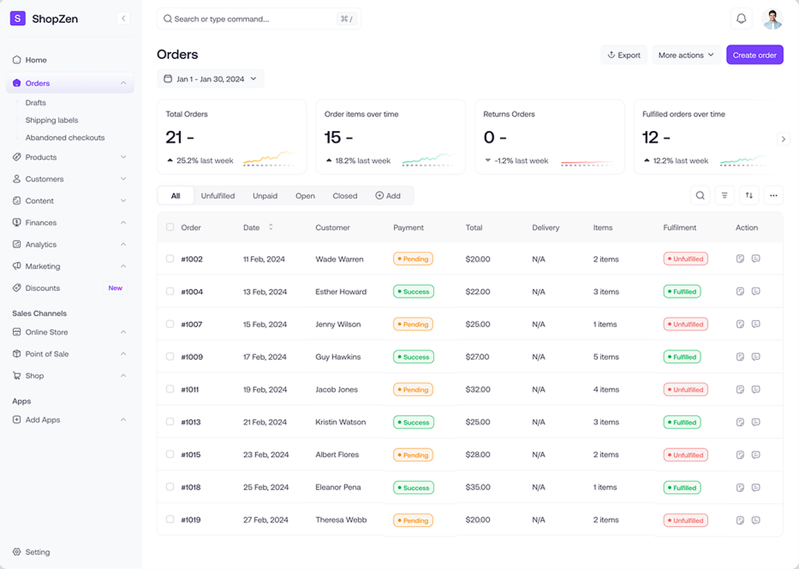
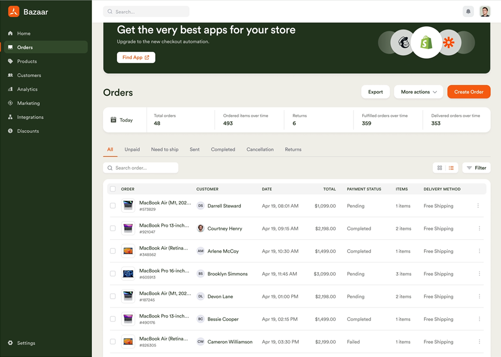
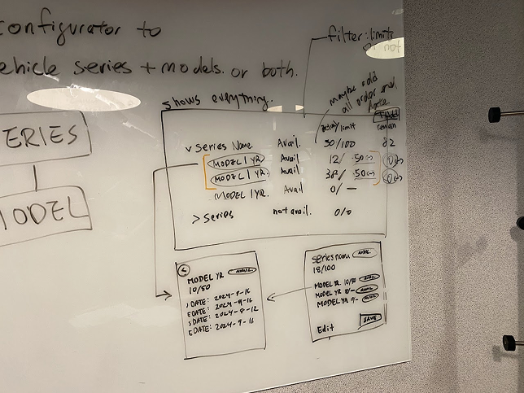
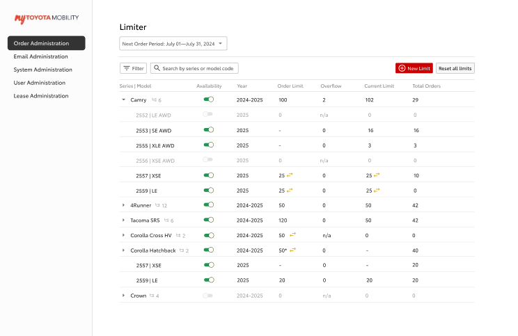

Toyota · 2024
Enhancing dealership operations with effortless fleet management
Toyota is a client of Invoke, my previous co-op employer, where the two companies collaborate across a range of projects. Working within a three-person team, I led the design work and presented to the client throughout the project. The focus was the order limiter tool, redesigning the interface used by Dolan Toyota administrators to manage vehicle order limits.
context
Toyota TMNA oversees all operations in North America. Invoke helps build the tools that support them.
Toyota Motor North America (TMNA) manages all Toyota operations across the continent. Invoke is a design and development agency that works with Toyota across a range of projects. My role within the team was to lead the design work and present to the client.
The team was three people: myself as the junior designer, one senior product designer, and one project manager. Weekly internal meetings were used to review tasks and changes, with bi-weekly sessions with the Toyota team to present progress. This project was one of several Toyota engagements at Invoke. I also worked on the mobile version of a Car Rental Reservation System for Dolan Toyota.
problem
The existing order limiter system has outdated UI and is challenging for new admins to learn. How might we design a more intuitive fleet management system that empowers administrators to efficiently manage vehicle order limits?
The backend vehicle ordering system Toyota admins relied on had outdated visuals, inconsistent hierarchy, and no clear way to set or view limits alongside order progress. Administrators needed a single interface where all of that information was visible and actionable. The client's request was explicit: the redesign had to be both efficient and aesthetic.
process
Auditing the original system
The first step was a close look at the existing fleet management system. The original UI had outdated visuals, inconsistent hierarchy, and no clear visual affordances for key actions like creating a new rule. The layout created cognitive overload rather than supporting the task.
Vehicle data was displayed in a dense, unstructured layout rather than a proper table, making it difficult to compare values across records at a glance. There was no obvious primary action; key functions were buried with no visual hierarchy to guide new admins. Inconsistent spacing and an absence of a layout grid added to the confusion. The dark, automotive consumer branding was also applied directly to the admin tool, prioritizing visual identity over the clarity and efficiency that an admin interface requires.

Finding inspiration
Before moving into solutions, existing data table and admin dashboard patterns from other products were reviewed to identify conventions worth adapting. Two patterns stood out: a side navigation bar for quick access between admin sections, and a table layout for listing and managing records at a glance. Both directly informed the structural direction of the redesign.


Workshop and whiteboard sketches
The senior product designer and I ran a workshop to sketch out the logic behind creating rules and setting limits. Working directly on a whiteboard helped us visualize the admin's workflow, identify edge cases, and align on a direction before moving into any digital work. The simplicity of sketching made it easy to share ideas, gather feedback, and explore multiple solutions quickly.
Designing the table view
A table view listing all vehicles with a limit applied was the direction taken. This gave administrators a full overview of all models and series at once, directly supporting the efficiency goal. Expandable rows allowed rule details to be reviewed inline without navigating away. Presenting this version to the client for the first time underscored the importance of walking through the full flow thoroughly, not just the final screens.


Client reviews and feedback
Client meetings brought together about seven participants, three from Invoke and two developers and two project leads from Toyota. Each session was used to walk through the current designs and give the Toyota team space to discuss and respond. The project manager documented key points and action items, which were reviewed internally before the next iteration.
The first review after v1 surfaced a range of functional requirements that hadn't been captured upfront. The client responded positively to elements like the filter, total order counts, and the model description screen, but also raised specific constraints: limits in the current month should be fixed and non-editable, rules with no data should be hidden, and the new rule modal needed dropdown filtering by series and model. This feedback directly shaped what changed between v1 and the final prototype.
Creating component sets
Component sets were not part of the original scope, but I built them independently after the core design work was done. Since the components were already in auto layout, reconstructing them into a structured design system was straightforward. The goal was to make the work easier to maintain and hand off.
Final prototype and handoff
Reducing the number of clicks and pages an administrator had to navigate was the core constraint throughout. The final prototype kept all necessary information surfaced and actionable within a single view, with no unnecessary context switching. A UX spec was prepared for handoff covering five main use cases: the current order period flow including in-line edits and table interactions, the order period selector for navigating past and future periods, the future order period flow for editing and setting series and group limits, confirmation modals for destructive actions, and adding a new rule.

outcome
A modernized fleet management system, built around admin efficiency.
The final prototype was delivered to Dolan Toyota with a redesigned order limiter interface. The fragmented original was replaced with a unified table view where administrators could manage vehicle order limits, review rules, and take action without leaving the main screen.
reflections
Communicating design decisions
Invoke was my first design co-op, and this project was the first time I presented work to project managers, developers, and a client. Leading the client meetings built confidence in walking stakeholders through design decisions and responding to feedback directly, a skill that carried into subsequent projects.

Building practical Figma skills
Working on a real product gave me hands-on experience in Figma that went beyond the basics. Building out component sets, using auto layout to construct complex dashboard screens, and creating a working prototype all became skills I developed through this project rather than in isolation.